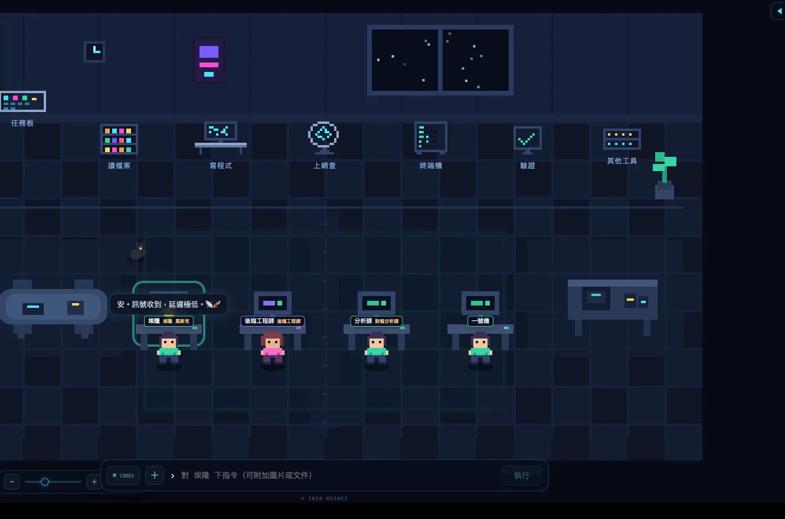
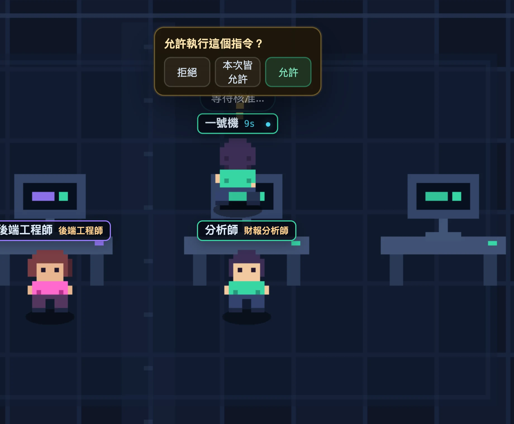
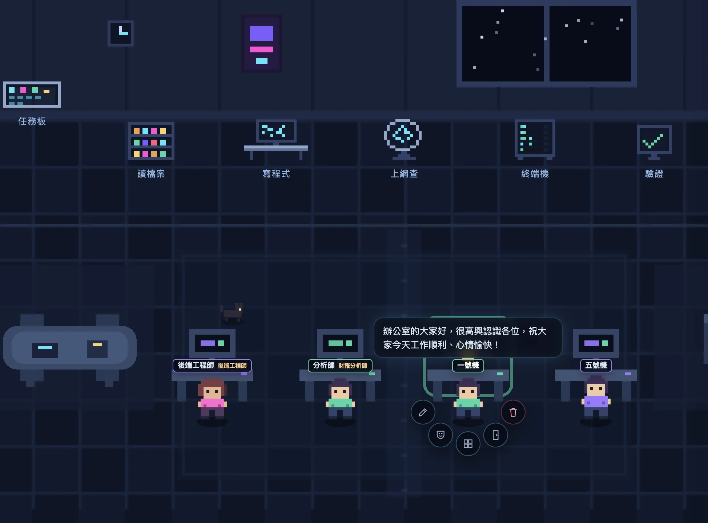
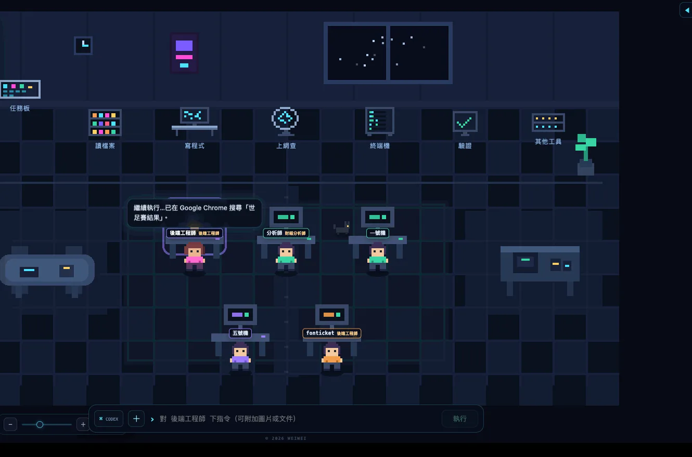
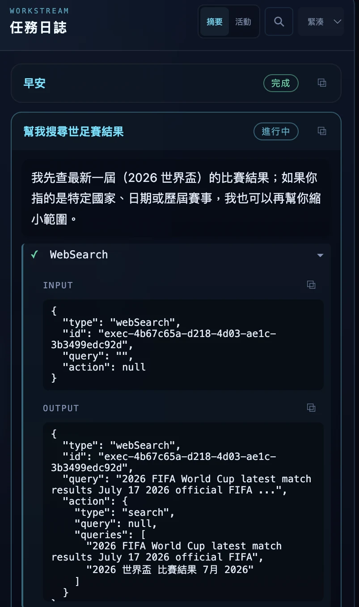
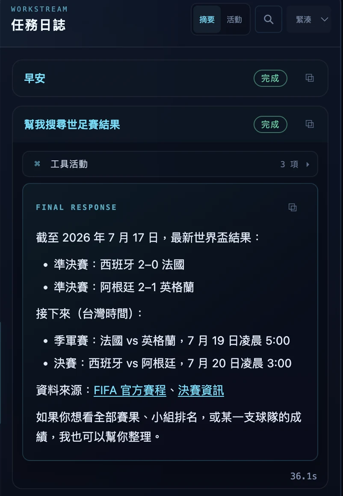
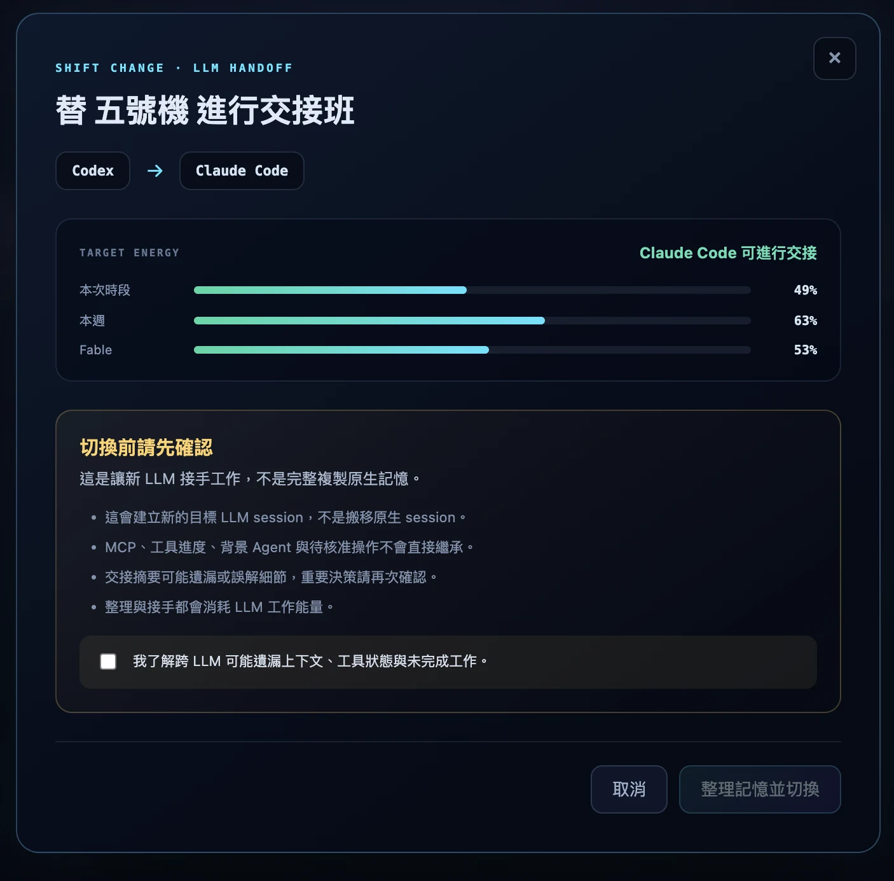
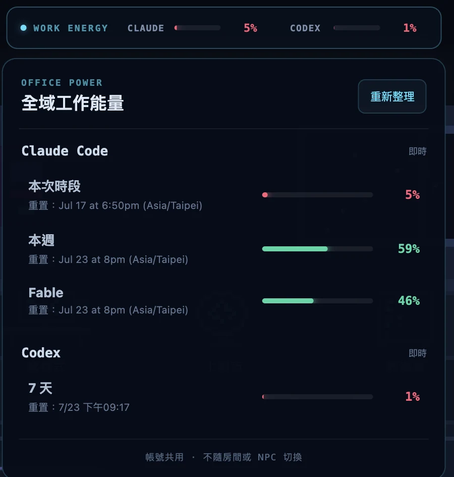
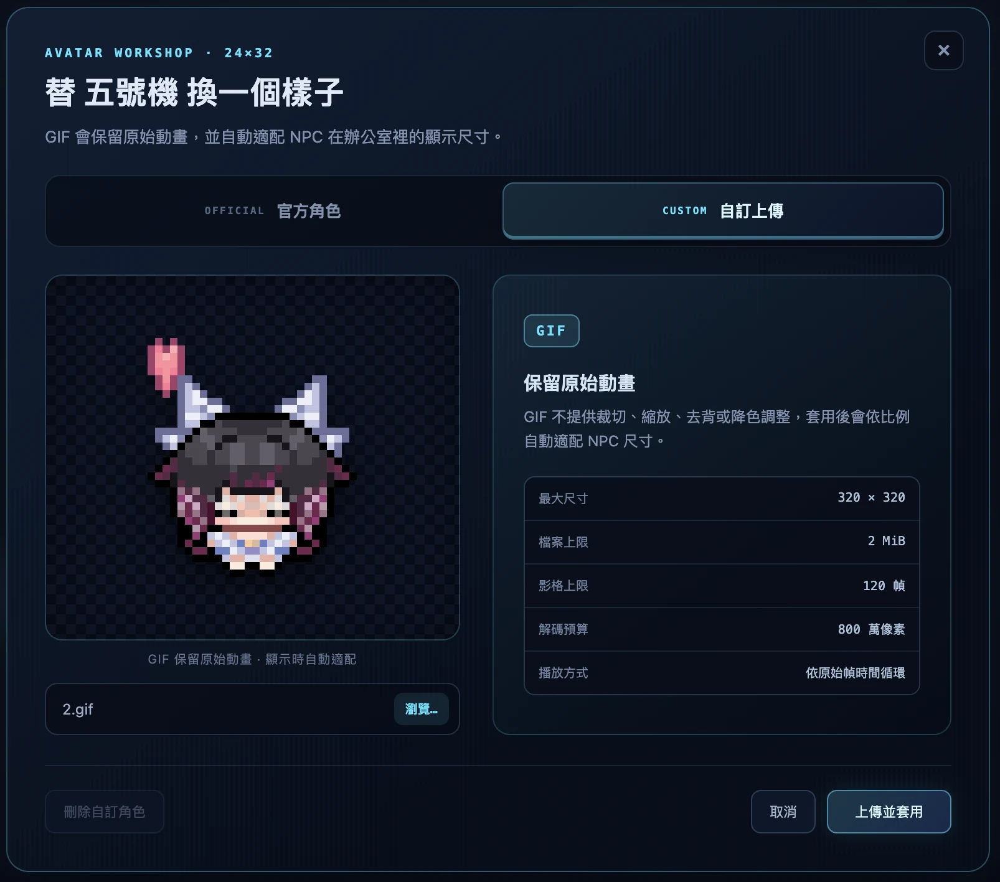

可建立具名稱的 Claude Code／Codex 帳號，各自使用私有 CLI home 與登入狀態。建立 NPC 時選擇帳號；已有原生對話的 NPC 必須明確清除後才能換帳號，不會默默丟掉 thread。
SIGNATURE · 2.0.0
把工作交給部門，剩下的讓主管決定。
部門是兩個以上、共用同一個工作資料夾的 NPC，其中一位是部門主管。用 DepartmentCreator 直接建立： 填目的、人數與 provider，AI 會自動草擬互補的角色與 persona，你只要選出誰當主管。之後每次交付工作， 你只需要寫目標與驗收標準——主管會自己決定該找專家諮詢、請人審查，還是啟動一段完整的任務鏈。
- AI 規劃部門：目的、人數、provider 填好，AI 自動草擬互補角色，你選一位主管
- Quick Consult／Quick Review：唯讀的兩步協作，專家給建議或審查，主管執行與收尾
- Department Mission：2 到 5 步的任務鏈，一定以執行開始，每個審查步驟換一位 NPC 進行，退件最多自動修正兩輪
- 五個煞車點才會叫你：計畫待核准、審查結果不明確、修正輪數用完、步驟失敗、成員離線——其餘全自動交接
- 無論哪種模式，都不會自動 commit／push／merge／tag／release，也不碰任何登入認證
部門主管 BOSS
QUICK CONSULT
專家建議 → 主管執行（2 步・唯讀）
QUICK REVIEW
專家審查 → 主管收尾（2 步・唯讀）
DEPARTMENT MISSION
2–5 步任務鏈，執行／審查交替換人
MISSION — 交給部門LIVE
NEEDS ATTENTION — 需要你決定LIVE
ASSIGN — 一號機 收到任務REC

SCENE 01 · 派任務
派下去，然後看著它走去上班。
在輸入列打一句話，NPC 就動身走到對應的工位——讀檔案、寫程式、上網查、跑終端機。 名牌上跳著已執行秒數，頭上的氣泡即時串流它正在說什麼。
- 工位＝工具：角色站在哪，就代表 agent 正在用什麼
- 完成慶祝：任務成功時鄰桌同事會轉頭歡呼，失敗則飄出小烏雲
- 這段錄影是真實任務的螢幕錄製，沒有剪接
APPROVAL — 等待核准中LIVE

SCENE 02 · 核准
誰在等你，一眼就看到。
Agent 要執行指令時，NPC 會停下來、頭上冒出「?」原地踱步， 核准按鈕直接浮在角色旁邊。不用切視窗、不用翻日誌——遠遠掃一眼就知道誰卡住了。
- 三個選擇：拒絕／本次皆允許／允許這一次
- 三段自動核准：關閉、安全（唯讀白名單放行）、完全（危險指令仍強制確認）
- 每個 NPC 獨立設定，互不影響
RADIAL — 右鍵選單LIVE

SCENE 03 · 圓弧選單
右鍵一按，管理這個角色的一切。
對任何 NPC 按右鍵，就能重新命名、設定 persona、換造型、切換房間，或安全移除； 也能請同一工作位置的另一位 NPC 進行唯讀 Consult 或 Review。需要更完整的分工， 直接建立一個部門就好。
- 個性系統：給 NPC 一個持久的角色設定（「你是前端 QA，只提問題不改 code」），透過各 CLI 原生機制注入，重啟不會忘
- 像素工作坊：換造型、上傳自己的動態 GIF 頭像
- 跨 LLM 交接：Claude 做到一半，整理好進度摘要交給 Codex 接手（或反過來）
CAMERA — 縮放與平移REC

SCENE 04 · 鏡頭
你的辦公室，你的視角。
拖曳空白處平移、滾輪或左下拉桿縮放——整數倍率，像素永遠銳利。 雙擊地板或按 ⟳ 一鍵回到預設構圖。
- NPC 一多，放大追某一個、拉遠看全局
- 名牌、氣泡、核准列全部跟著鏡頭走
- 平板可用：單指拖曳平移＋拉桿縮放
SCENE 05 · 任務日誌
每一步，都攤在陽光下。
左圖是進行中：agent 說明它要查什麼，WebSearch 的輸入輸出逐字串流。 右圖是收工：最終回覆以 Markdown 完整渲染——清單、連結、資料來源，外加工具活動數與總耗時。
- 兩種視角：摘要模式只看結論，活動模式攤開每一次工具呼叫
- 可搜尋：跨任務全文搜尋目前 NPC 的日誌；程式碼區塊一鍵複製
- 桌面通知：切去別的視窗時，任務完成或等核准會發系統通知（預設關閉）
執行中 — 工具串流LIVE

完成 — FINAL RESPONSELIVE

SHIFT CHANGE — 交接班LIVE

OFFICE POWER — 全域能量LIVE

SCENE 06 · 跨 LLM 交接與能量
換一顆大腦，不丟工作。
Codex 額度見底、或這題 Claude 更擅長？替 NPC 辦交接班： 系統先整理目前的工作摘要，再交給另一個 LLM 的新 session 接手。
- 全域工作能量：頂欄常駐兩家 CLI 的即時用量，點開看本次時段／本週／各層級的重置時間
- 先看能量再換：交接前顯示目標 LLM 的即時用量，避免換過去馬上斷糧
- 誠實的告知：明確列出跨 LLM 會遺漏什麼（工具狀態、待核准操作），勾選確認才執行；Claude ⇄ Codex 雙向皆可
SCENE 07 · 像素工作坊
你的隊員，長你想要的樣子。
五位官方隊員造型直接換，或上傳自己的像素 GIF——動畫原樣保留， 自動適配 NPC 在辦公室裡的尺寸，走路、工作、歡呼動作照常。
- GIF 動態頭像：最大 320×320、120 幀，依原始幀時間循環播放
- 不怕手滑：切換官方造型不會刪除你的自訂角色，隨時換回來
- 搭配個性系統，讓「財報分析師」看起來真的像財報分析師
OFFICIAL — 官方隊員LIVE
CUSTOM — 自訂 GIFLIVE
